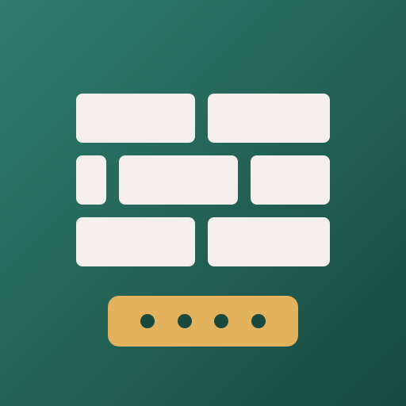

حاسبة البناء
احسب كمية الطوب والأسمنت والرمل. تشتغل من غير نت.
تحميل التطبيق (أندرويد) - الإصدار 3حجم الملف صغير (حوالي 33 ك.ب).
أو افتحها وثبّتها من المتصفحخطوات التثبيت على أندرويد
- اضغط "تحميل التطبيق" وافتح الملف بعد ما ينزل (اسمه brickcalc-v3.apk).
- لو عندك نسخة قديمة من التطبيق: ثبّت فوقها وهتتحدث لوحدها. مش لازم تمسحها.
- لو ظهرت رسالة "التثبيت من مصادر غير معروفة"، اضغط "الإعدادات" وفعّل السماح للمتصفح (مرة واحدة بس).
- اضغط "تثبيت". لو ظهر تحذير Play Protect اختار "تثبيت على أي حال".
- افتح التطبيق ونزّل لآخر الصفحة: لازم تلاقي "الإصدار 3 (v3)" وفي الأعلى تبويبات: بناء الطوب، اللياسة، الدهانات.
بدون ملف: تثبيت من المتصفح
- افتح الرابط "أو افتحها وثبّتها" في Chrome.
- من قائمة Chrome (النقاط الثلاث) اختار "تثبيت التطبيق" أو "إضافة إلى الشاشة الرئيسية".